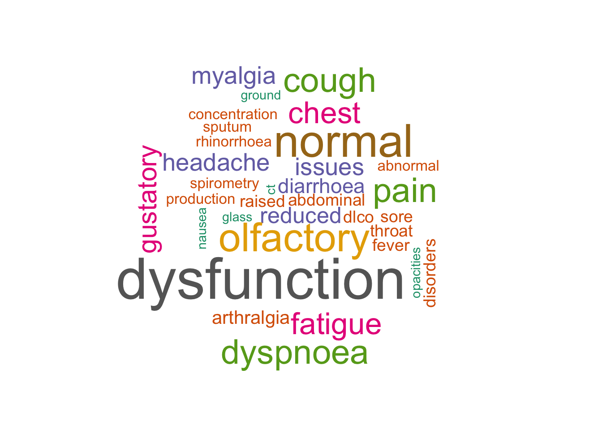

# Uncomment below if requiring installations of packages
# install.packages("wordcloud")
# install.packages("RColorBrewer")
# install.packages("tidytext")
# install.packages("leaflet")Background
This was another update on the current long COVID saga around the world that I thought to follow up from my earlier work (details in the SQL and Tableau projects). This time the dataset was obtained from another journal paper, which had data collected until July 2021 (the previous paper was only until March 2021). I’ve used Python to extract a table from the PDF of the paper and also Excel to assist with data cleaning. This was followed by using R to analyse and visualise all the data.
Source of dataset
Journal paper by Healey Q, Sheikh A, Daines L, Vasileiou E. Symptoms and signs of long COVID: A rapid review and meta-analysis. J Glob Health 2022;12:05014. Creative Commons Attribution 4.0 International Public License
Data scraping from PDF
The dataset was scraped from a PDF obtained via PubMed (journal paper source as shown above) by using tabula-py (for details please see this post, “Table scraping from PDF”). Unfortunately I had trouble installing a similar R package remotely after it was archived (tabulizer package with known issues in its GitHub repository) so I trialled tabula-py instead. It worked for scraping all the data from the target table, but the downside was that the scraped data did not inherit the original tabular format on PDF, with columns and rows all jumbled. I’ve discussed a little bit more on the likely reason for this in the blog post link above. So in short, the final scraped table was cleaned in Excel and saved as .csv file, which was then imported as shown below.
Data inspection and wrangling
Loading all the required libraries below. Install libraries needed as shown in code above.
library(tidyverse)
library(ggplot2)
library(knitr)
library(leaflet)
library(tidytext)
library(wordcloud)
library(RColorBrewer)df <- read_csv("Full_table.csv")New names:
Rows: 75 Columns: 9
── Column specification
──────────────────────────────────────────────────────── Delimiter: "," chr
(5): Author (country), Hospital (%) {ICU (%)}, Comorbidities, Body syste... dbl
(2): Age (years), Follow-up time (days) lgl (2): ...8, ...9
ℹ Use `spec()` to retrieve the full column specification for this data. ℹ
Specify the column types or set `show_col_types = FALSE` to quiet this message.
• `` -> `...8`
• `` -> `...9`Here’s a quick overview on the hospitalisation rates across all the studies from this paper.
df_hosp <- df %>%
select(`Author (country)`, `Hospital (%) {ICU (%)}`)
df_hosp# A tibble: 75 × 2
`Author (country)` `Hospital (%) {ICU (%)}`
<chr> <chr>
1 Bellan (Italy) 100 {12}
2 Bellan (Italy) <NA>
3 Bellan (Italy) <NA>
4 Bellan (Italy) <NA>
5 Bellan (Italy) <NA>
6 Bliddal (Denmark) 0
7 Bliddal (Denmark) <NA>
8 Bliddal (Denmark) <NA>
9 Bliddal (Denmark) <NA>
10 Bliddal (Denmark) <NA>
# … with 65 more rows
# ℹ Use `print(n = ...)` to see more rowsSeparating columns and change column type
The table column of Hospital (%) {ICU (%)} was separated into two separate columns to allow clearer differentiation between hospital and ICU rates within each study. The data type for Hospital (%) column was also changed from character to numeric so we can plot a bar graph later on (otherwise the x-axis may not be accurate or properly shown).
df_hosp_icu <- df_hosp %>%
# separate column into two columns
separate(`Hospital (%) {ICU (%)}`, c("Hospital (%)", "ICU (%)"))%>%
# change column type
mutate(across(`Hospital (%)`, as.numeric))
# show the first 10 rows as example
c <- head(df_hosp_icu, 10)
kable(c)| Author (country) | Hospital (%) | ICU (%) |
|---|---|---|
| Bellan (Italy) | 100 | 12 |
| Bellan (Italy) | NA | NA |
| Bellan (Italy) | NA | NA |
| Bellan (Italy) | NA | NA |
| Bellan (Italy) | NA | NA |
| Bliddal (Denmark) | 0 | NA |
| Bliddal (Denmark) | NA | NA |
| Bliddal (Denmark) | NA | NA |
| Bliddal (Denmark) | NA | NA |
| Bliddal (Denmark) | NA | NA |
Separating rows
The listed co-morbidities for each study were separated into separate rows, rather than into columns, to avoid adding too many columns all at once.
df_new <- df %>%
separate_rows(Comorbidities, sep = ", ")
# Show the first 10 rows as example
e <- head(df_new, 10)
kable(e)| Author (country) | Hospital (%) {ICU (%)} | Age (years) | Comorbidities | Follow-up time (days) | Body system | Results | …8 | …9 |
|---|---|---|---|---|---|---|---|---|
| Bellan (Italy) | 100 {12} | 61 | 41% hypertension | 107 | Generalised/MSK | 5.9% myalgia, 5.9% arthralgia | NA | NA |
| Bellan (Italy) | 100 {12} | 61 | 15% diabetes | 107 | Generalised/MSK | 5.9% myalgia, 5.9% arthralgia | NA | NA |
| Bellan (Italy) | 100 {12} | 61 | 11% obesity | 107 | Generalised/MSK | 5.9% myalgia, 5.9% arthralgia | NA | NA |
| Bellan (Italy) | 100 {12} | 61 | 11% endocrine disease | 107 | Generalised/MSK | 5.9% myalgia, 5.9% arthralgia | NA | NA |
| Bellan (Italy) | 100 {12} | 61 | 10% malignancy | 107 | Generalised/MSK | 5.9% myalgia, 5.9% arthralgia | NA | NA |
| Bellan (Italy) | 100 {12} | 61 | 9% IHD | 107 | Generalised/MSK | 5.9% myalgia, 5.9% arthralgia | NA | NA |
| Bellan (Italy) | 100 {12} | 61 | 8% dyslipidaemia | 107 | Generalised/MSK | 5.9% myalgia, 5.9% arthralgia | NA | NA |
| Bellan (Italy) | 100 {12} | 61 | 7% AF | 107 | Generalised/MSK | 5.9% myalgia, 5.9% arthralgia | NA | NA |
| Bellan (Italy) | 100 {12} | 61 | 6% COPD | 107 | Generalised/MSK | 5.9% myalgia, 5.9% arthralgia | NA | NA |
| Bellan (Italy) | 100 {12} | 61 | 6% CKD | 107 | Generalised/MSK | 5.9% myalgia, 5.9% arthralgia | NA | NA |
A frequency count showing types of comorbidities in long COVID
I then noticed how the comorbidities for each study were listed with different percentages and to gather a quick initial overall picture of the data, I started by removing these digits and percentage symbols. Obviously since I was still quite new to R (started using R in July), I soon ran into a problem as I kept on getting stuck with not having the count() function to actually count unique elements under the co-morbidities column.
By looking at the magnified circle on the right in the image below, you would notice a subtle difference in spacing, so yes the culprit was the space1 and once it was removed, count() worked nicely as how it should be. One small downside was that it would also remove the space between the co-morbidity terms e.g. “liver disease” became “liverdisease”, but since it achieved the aim intended to do unique counts on all the co-morbidities, I left it as it was.

df_new %>%
# Remove % symbol, numbers and don't forget to remove spaces as well in the column!
mutate(Comorbidities = str_remove_all(Comorbidities, "[:digit:]|[%]|[ ]")) %>%
# Add this line to filter out all the "NA"s
filter(!is.na(Comorbidities)) %>%
# Count the comorbidities in descending order
count(Comorbidities, sort = TRUE) # A tibble: 37 × 2
Comorbidities n
<chr> <int>
1 diabetes 14
2 hypertension 13
3 IHD 10
4 asthma 9
5 COPD 9
6 obesity 9
7 CKD 6
8 malignancy 5
9 dyslipidaemia 4
10 liverdisease 4
# … with 27 more rows
# ℹ Use `print(n = ...)` to see more rowsNow we could observe the top 3 frequency of all co-morbidities listed were: diabetes, hypertension and IHD2. These were followed by, unsurprisingly, common respiratory illnesses such as asthma, COPD3, then obesity, and also CKD4, malignancy, dyslipidaemia and so on. These would be considered as high risk factors of developing long COVID symptoms if someone had these co-morbidities present before being infected by the coronoviruses.
Data visualisations
Bar graph for hospitalisation rate
Then a line of code to filter out the results of “NA” under the column of Hospital (%) was added. Most of the cells with “NA” were there to fill the multiple empty row entries for other variables and not for the Hospital (%) column, therefore these “NA”s were removed in this instance. The horizontal bar graph below showed the COVID-19 hospitalisation rate for studies in different countries, presenting a very diverse results between 0% and 100% hospitalisations across all 19 cohort studies.
df_hosp_icu %>%
# filter out all NAs
filter(!is.na(`Hospital (%)`)) %>%
# plot the bar graph
ggplot(aes(x = `Author (country)`, y = `Hospital (%)`)) +
geom_bar(stat = "identity") +
coord_flip()
Note: two of the studies were removed from above, these studies were by Chiesa-Estomba (Italy) and Mahmud (Bangladesh), which had “Not stated” recorded under Hospital (%) {ICU (%)} column. When the Hospital (%) column was converted from character to numeric, these two rows were converted to “NA” automatically.
Interactive map for long COVID results
Preparing dataframe for map
df_new_a <- df %>%
# separate Author (country) column into two columns
# note: rename country as region - needed for joining data later on
separate(`Author (country)`, c("Author", "region")) %>%
# print only the columns as selected
select(`region`, Results)
# The study author name, Fernandez-de-Las-Penas (Spain), got separated as above
# so replace "de" under Country column with the actual country name of Spain
df_new_a[df_new_a == "de"] <- "Spain"
# Show first 10 rows as example
d <- head(df_new_a, 10)
kable(d)| region | Results |
|---|---|
| Italy | 5.9% myalgia, 5.9% arthralgia |
| Italy | 5.5% dyspnoea, 2.5% cough, 0.4% chest pain, 51.6% reduced DLCO, normal spirometry |
| Italy | 43% PTSD symptoms |
| Italy | 5% gustatory dysfunction, 4.6% olfactory dysfunction |
| Italy | 1.3% diarrhoea |
| Denmark | fatigue, myalgia, arthralgia, chills, fever |
| Denmark | dyspnoea, cough, chest pain, sputum production |
| Denmark | memory issues, concentration issues, headache |
| Denmark | olfactory dysfunction, gustatory dysfunction, sore throat, rhinorrhoea, sneezing |
| Denmark | diarrhoea, anorexia, abdominal pain, nausea |
df1 <- df_new_a %>%
# re-group dataframe based on region column
group_by(`region`) %>%
# merge all rows under Results column into one string
summarise(across(everything(), ~toString(.)))
df1# A tibble: 13 × 2
region Results
<chr> <chr>
1 Australia 50% fatigue, 35.7% arthralgia, 21.4% myalgia, 28.6% cough, 25% dy…
2 Austria 24% night sweats, 0% fever, 63% abnormal chest CT: ground-glass o…
3 Bangladesh 33% fatigue, 1.4% arthralgia, 0.6% myalgia, 8.5% cough, 7% dyspno…
4 Belgium 25% fatigue, abnormal chest CT: 67% ground glass opacities, 44% r…
5 China 62% abnormal chest CT: 35% fibrotic-like changes, 27% ground glas…
6 Denmark fatigue, myalgia, arthralgia, chills, fever, dyspnoea, cough, che…
7 Estomba 51% olfactory dysfunction
8 France 16.8% olfactory dysfunction, 9.6% gustatory dysfunction, fatigue,…
9 Germany 45% fatigue, 15% myalgia, 3% fever, slight pain/discomfort, 33% d…
10 Italy 5.9% myalgia, 5.9% arthralgia, 5.5% dyspnoea, 2.5% cough, 0.4% ch…
11 Spain 61.2% fatigue, 23.3% dyspnoea, 6.5% chest pain, 2.5% cough
12 UK fatigue, myalgia, fever, dyspnoea, cough, chest pain, headache, p…
13 USA 44.8% fatigue, 21.3% myalgia, 15.8% arthralgia, 1.1% fever, 1.1% …# grab the world map data from ggplot
mapdata <- map_data("world")
# view full dataset in separate tab
view(mapdata)# combine mapdata dataframe (contains longitudes & latitudes of each country)
# with df_new_a dataframe (contains country info)
mapdata <- left_join(mapdata, df1, by = "region")
head(mapdata) long lat group order region subregion Results
1 -69.89912 12.45200 1 1 Aruba <NA> <NA>
2 -69.89571 12.42300 1 2 Aruba <NA> <NA>
3 -69.94219 12.43853 1 3 Aruba <NA> <NA>
4 -70.00415 12.50049 1 4 Aruba <NA> <NA>
5 -70.06612 12.54697 1 5 Aruba <NA> <NA>
6 -70.05088 12.59707 1 6 Aruba <NA> <NA># filter out all the empty or "NA" cells
mapdata_new <- mapdata %>% filter(!is.na(mapdata$Results))
head(mapdata_new) long lat group order region subregion
1 123.5945 -12.42568 133 7115 Australia Ashmore and Cartier Islands
2 123.5952 -12.43594 133 7116 Australia Ashmore and Cartier Islands
3 123.5732 -12.43418 133 7117 Australia Ashmore and Cartier Islands
4 123.5725 -12.42393 133 7118 Australia Ashmore and Cartier Islands
5 123.5945 -12.42568 133 7119 Australia Ashmore and Cartier Islands
6 158.8788 -54.70976 139 7267 Australia Macquarie Island
Results
1 50% fatigue, 35.7% arthralgia, 21.4% myalgia, 28.6% cough, 25% dyspnoea, 3.6% chest pain, 10.7% headache, 28.6% olfactory dysfunction, 14.3% rhinorrhoea, no abdominal pain
2 50% fatigue, 35.7% arthralgia, 21.4% myalgia, 28.6% cough, 25% dyspnoea, 3.6% chest pain, 10.7% headache, 28.6% olfactory dysfunction, 14.3% rhinorrhoea, no abdominal pain
3 50% fatigue, 35.7% arthralgia, 21.4% myalgia, 28.6% cough, 25% dyspnoea, 3.6% chest pain, 10.7% headache, 28.6% olfactory dysfunction, 14.3% rhinorrhoea, no abdominal pain
4 50% fatigue, 35.7% arthralgia, 21.4% myalgia, 28.6% cough, 25% dyspnoea, 3.6% chest pain, 10.7% headache, 28.6% olfactory dysfunction, 14.3% rhinorrhoea, no abdominal pain
5 50% fatigue, 35.7% arthralgia, 21.4% myalgia, 28.6% cough, 25% dyspnoea, 3.6% chest pain, 10.7% headache, 28.6% olfactory dysfunction, 14.3% rhinorrhoea, no abdominal pain
6 50% fatigue, 35.7% arthralgia, 21.4% myalgia, 28.6% cough, 25% dyspnoea, 3.6% chest pain, 10.7% headache, 28.6% olfactory dysfunction, 14.3% rhinorrhoea, no abdominal painI realised that map_data(“world”) showed all the longitudes and latitudes for subregions of each country, which might not be required for the map I wanted. So after trialling the map visualisation several times, I opted to use centroids of each country instead, to leave the map in a cleaner and easy-to-see state. Otherwise one of the maps I tested before ended up with countless blobs of circles marking the boundaries of each country, looking like a 5-year-old’s map drawing!
mapdata_final <- mapdata_new %>%
group_by(region) %>%
# Using centroids of countries = means of longitudes and latitudes for each country
summarise(long = mean(long), lat = mean(lat))
kable(mapdata_final)| region | long | lat |
|---|---|---|
| Australia | 136.998543 | -25.18300 |
| Austria | 13.473366 | 47.57973 |
| Bangladesh | 90.506118 | 23.50905 |
| Belgium | 4.732104 | 50.59063 |
| China | 106.847575 | 35.08244 |
| Denmark | 10.731255 | 55.70473 |
| France | 3.226979 | 46.16686 |
| Germany | 10.401156 | 51.20461 |
| Italy | 11.752853 | 42.16598 |
| Spain | -2.906821 | 40.67995 |
| UK | -4.098750 | 55.55813 |
| USA | -121.625310 | 48.74333 |
# join above mapdata_final with the df1 which contains countries and long COVID results
df1_mapdata <- left_join(mapdata_final, df1, by = "region")
kable(df1_mapdata)| region | long | lat | Results |
|---|---|---|---|
| Australia | 136.998543 | -25.18300 | 50% fatigue, 35.7% arthralgia, 21.4% myalgia, 28.6% cough, 25% dyspnoea, 3.6% chest pain, 10.7% headache, 28.6% olfactory dysfunction, 14.3% rhinorrhoea, no abdominal pain |
| Austria | 13.473366 | 47.57973 | 24% night sweats, 0% fever, 63% abnormal chest CT: ground-glass opacities, reticular lesions, consolidations, bronchial dilation. 36% dyspnoea, abnormal spirometry: 22% reduced FVC, 22% reduced FEV1, normal FEV1/FVC. 21% reduced DLCO, 17% cough, 22% sleep disorders, 19% olfactory dysfunction, 9% diarrhoea/vomiting, 97% normal LVEF, 55% diastolic dysfunction on echo, 23% raised NT-proBNP, 10% pulmonary hypertension, 1% pericardial effusion, raised D-dimer, potentially raised ferritin, normal CRP, normal procalcitonin, normal IL-6 |
| Bangladesh | 90.506118 | 23.50905 | 33% fatigue, 1.4% arthralgia, 0.6% myalgia, 8.5% cough, 7% dyspnoea, 0.8% chest pain, 3.9% circadian rhythm disorders, 3.4% headache, 2.3% sleep disturbance, 1.4% adjustment disorder, 2.3% vertigo, 2% olfactory dysfunction, 1.4% palpitation |
| Belgium | 4.732104 | 50.59063 | 25% fatigue, abnormal chest CT: 67% ground glass opacities, 44% reticulations, 20% fibrotic lesions/traction bronchiectasis, 7% consolidations. 46% reduced DLCO, 35% dyspnoea, 10% dry cough, 4% chest tightness, normal spirometry |
| China | 106.847575 | 35.08244 | 62% abnormal chest CT: 35% fibrotic-like changes, 27% ground glass opacities/interstitial thickening, nodules/masses, interlobar pleural traction, pulmonary atelectasis and bronchiectasis. 26% reduced DLCO, 14% mild dyspnoea, 10% sputum production, 6.1% dry cough |
| Denmark | 10.731255 | 55.70473 | fatigue, myalgia, arthralgia, chills, fever, dyspnoea, cough, chest pain, sputum production, memory issues, concentration issues, headache, olfactory dysfunction, gustatory dysfunction, sore throat, rhinorrhoea, sneezing, diarrhoea, anorexia, abdominal pain, nausea, red runny eyes, 63% fatigue, 35% myalgia, 53% dyspnoea, 24% cough, 20% chest pain, 12% sputum production, 45% concentration issues, 27% headache, 27% paraesthesia, 31% gustatory dysfunction, 27% olfactory dysfunction, 10% sore throat, 10% abdominal pain, 8% diarrhoea, 8% nausea, 4% anorexia |
| France | 3.226979 | 46.16686 | 16.8% olfactory dysfunction, 9.6% gustatory dysfunction, fatigue, arthralgia, myalgia, dyspnoea, cough, headache, rhinorrhoea, olfactory dysfunction, gustatory dysfunction, sore throat |
| Germany | 10.401156 | 51.20461 | 45% fatigue, 15% myalgia, 3% fever, slight pain/discomfort, 33% dyspnoea, 33% cough. Normal spirometry, normal ABG, reduced DLCO, reduced distance on 6MWT, 18% cognitive issues, 15% headache, mild depression, subthreshold anxiety, 12% olfactory dysfunction, 12% rhinorrhoea, 9% gustatory dysfunction, 9% sore throat, 9% diarrhoea, 6% nausea, 3% abdominal pain, normal LFTs, 18% angina, normal left ventricular function, normal right ventricular function, normal cardiac biomarkers, normal FBC, normal coagulation screen, raised ferritin, potentially raised D-dimer, normal U&Es, normal CRP, normal procalcitonin, normal TFTs, normal IL-6, 17% fatigue, depression, concentration issues, 27% olfactory/gustatory dysfunction, alopecia, 42.3% subjective olfactory dysfunction, 26.9% objective olfactory dysfunction (discrimination and identification issues) |
| Italy | 11.752853 | 42.16598 | 5.9% myalgia, 5.9% arthralgia, 5.5% dyspnoea, 2.5% cough, 0.4% chest pain, 51.6% reduced DLCO, normal spirometry, 43% PTSD symptoms, 5% gustatory dysfunction, 4.6% olfactory dysfunction, 1.3% diarrhoea, 13.1% fatigue, 8.2% rheumatological issues, 6% dyspnoea, 2% cough, 0.8% chest pain, 9.6% neurological disorders, 4.9% psychiatric disorders, 2.7% headache, 10.4% olfactory/gustatory dysfunction, 1.5% gastrointestinal disorders, 3.7% alopecia, 3.4% cutaneous manifestations, 0.3% ocular symptoms, 21% olfactory dysfunction, 7.9% gustatory dysfunction |
| Spain | -2.906821 | 40.67995 | 61.2% fatigue, 23.3% dyspnoea, 6.5% chest pain, 2.5% cough |
| UK | -4.098750 | 55.55813 | fatigue, myalgia, fever, dyspnoea, cough, chest pain, headache, paraesthesia, numbness, concentration/ memory issues, olfactory dysfunction, sore throat, hoarse voice, tinnitus, earache, diarrhoea, abdominal pain, palpitations/tachycardia |
| USA | -121.625310 | 48.74333 | 44.8% fatigue, 21.3% myalgia, 15.8% arthralgia, 1.1% fever, 1.1% ulcer, 31.7% dyspnoea, 25.1% cough, 14.8% sputum production, 12.6% headache, 8.7% cognitive issues, 9.8% gustatory dysfunction, 9.3% olfactory dysfunction, 3.8% diarrhoea, 8.2% eye irritation, 1.1% ulcer |
# Prepare pop up information
df1_mapdata <- df1_mapdata %>%
# paste region and Results columns into popup_info and add it as a new column into dataset
# bold texts and add break lines by using html tags as shown
mutate(popup_info = paste("<b>",region,"</b>","<br/>","<b>","Long COVID symptoms:","</b>","<br/>", Results))
df1_mapdata# A tibble: 12 × 5
region long lat Results popup…¹
<chr> <dbl> <dbl> <chr> <chr>
1 Australia 137. -25.2 50% fatigue, 35.7% arthralgia, 21.4% myalgi… <b> Au…
2 Austria 13.5 47.6 24% night sweats, 0% fever, 63% abnormal ch… <b> Au…
3 Bangladesh 90.5 23.5 33% fatigue, 1.4% arthralgia, 0.6% myalgia,… <b> Ba…
4 Belgium 4.73 50.6 25% fatigue, abnormal chest CT: 67% ground … <b> Be…
5 China 107. 35.1 62% abnormal chest CT: 35% fibrotic-like ch… <b> Ch…
6 Denmark 10.7 55.7 fatigue, myalgia, arthralgia, chills, fever… <b> De…
7 France 3.23 46.2 16.8% olfactory dysfunction, 9.6% gustatory… <b> Fr…
8 Germany 10.4 51.2 45% fatigue, 15% myalgia, 3% fever, slight … <b> Ge…
9 Italy 11.8 42.2 5.9% myalgia, 5.9% arthralgia, 5.5% dyspnoe… <b> It…
10 Spain -2.91 40.7 61.2% fatigue, 23.3% dyspnoea, 6.5% chest p… <b> Sp…
11 UK -4.10 55.6 fatigue, myalgia, fever, dyspnoea, cough, c… <b> UK…
12 USA -122. 48.7 44.8% fatigue, 21.3% myalgia, 15.8% arthral… <b> US…
# … with abbreviated variable name ¹popup_infoleaflet() %>%
# initialising the graphics environment for map
addTiles() %>%
# add circle markers to map
# use the df1_mapdata dataset containing countries, longitudes, latitudes and long COVID results
# add data, latitudes, longitudes, radius of circles, pop up information
addCircleMarkers(data = df1_mapdata, lat = ~lat, lng = ~long, radius = ~3, popup = ~popup_info)Interactive map for long COVID symptoms
ABG = arterial blood gas, CT = computed tomography, CRP = c-reactive protein, DLCO = diffusing capacity for carbon monoxide, FBC = full blood count, FEV1 = forced expiratory volume in one second, FVC = forced vital capacity, IL-6 = interleukin-6, LFT = liver function test, LVEF = left ventricular ejection fraction, NT-proBNP = N-terminal pro B-type natriuretic peptide, PTSD = posttraumatic stress disorder, 6MWT = 6-min walk test, U&E = urea and electrolyte, TFT = thyroid function test
Text mining for word cloud
When skimming through the Results column, it appeared some of the terms recorded were repetitive, so a wordcloud might be another interesting way to see if it could highlight any particular long COVID symptoms from this meta-analysis.
# Select the results column
text <- df$Results
# Remove numbers from the texts so that the digits won't appear in the wordcloud
text1 <- str_replace_all(text, "[:digit:]", "")
text1 [1] ".% myalgia, .% arthralgia"
[2] ".% dyspnoea, .% cough, .% chest pain, .% reduced DLCO, normal spirometry"
[3] "% PTSD symptoms"
[4] "% gustatory dysfunction, .% olfactory dysfunction"
[5] ".% diarrhoea"
[6] "fatigue, myalgia, arthralgia, chills, fever"
[7] "dyspnoea, cough, chest pain, sputum production"
[8] "memory issues, concentration issues, headache"
[9] "olfactory dysfunction, gustatory dysfunction, sore throat, rhinorrhoea, sneezing"
[10] "diarrhoea, anorexia, abdominal pain, nausea"
[11] "red runny eyes"
[12] "% olfactory dysfunction"
[13] ".% olfactory dysfunction, .% gustatory dysfunction"
[14] "% fatigue, % myalgia, % fever, slight pain/discomfort"
[15] "% dyspnoea, % cough. Normal spirometry, normal ABG, reduced DLCO, reduced distance on MWT"
[16] "% cognitive issues, % headache, mild depression, subthreshold anxiety"
[17] "% olfactory dysfunction, % rhinorrhoea, % gustatory dysfunction, % sore throat"
[18] "% diarrhoea, % nausea, % abdominal pain, normal LFTs"
[19] "% angina, normal left ventricular function, normal right ventricular function, normal cardiac biomarkers"
[20] "normal FBC, normal coagulation screen, raised ferritin, potentially raised D-dimer, normal U&Es, normal CRP, normal procalcitonin, normal TFTs, normal IL-"
[21] ".% fatigue"
[22] ".% dyspnoea, .% chest pain, .% cough"
[23] "% fatigue"
[24] "abnormal chest CT: % ground glass opacities, % reticulations, % fibrotic lesions/traction bronchiectasis, % consolidations. % reduced DLCO, % dyspnoea, % dry cough, % chest tightness, normal spirometry"
[25] "% fatigue"
[26] "depression, concentration issues"
[27] "% olfactory/gustatory dysfunction"
[28] "alopecia"
[29] "fatigue, arthralgia, myalgia"
[30] "dyspnoea, cough"
[31] "headache"
[32] "rhinorrhoea, olfactory dysfunction, gustatory dysfunction, sore throat"
[33] "% abnormal chest CT: % fibrotic-like changes, % ground glass opacities/interstitial thickening, nodules/masses, interlobar pleural traction, pulmonary atelectasis and bronchiectasis. % reduced DLCO, % mild dyspnoea, % sputum production, .% dry cough"
[34] "% fatigue, .% arthralgia, .% myalgia"
[35] ".% cough, % dyspnoea, .% chest pain"
[36] ".% headache"
[37] ".% olfactory dysfunction, .% rhinorrhoea"
[38] "no abdominal pain"
[39] ".% fatigue, .% myalgia, .% arthralgia, .% fever, .% ulcer"
[40] ".% dyspnoea, .% cough, .% sputum production"
[41] ".% headache, .% cognitive issues"
[42] ".% gustatory dysfunction, .% olfactory dysfunction"
[43] ".% diarrhoea"
[44] ".% eye irritation, .% ulcer"
[45] "% fatigue, % myalgia"
[46] "% dyspnoea, % cough, % chest pain, % sputum production"
[47] "% concentration issues, % headache, % paraesthesia"
[48] "% gustatory dysfunction, % olfactory dysfunction, % sore throat"
[49] "% abdominal pain, % diarrhoea, % nausea, % anorexia"
[50] "% fatigue, .% arthralgia, .% myalgia"
[51] ".% cough, % dyspnoea, .% chest pain"
[52] ".% circadian rhythm disorders, .% headache, .% sleep disturbance, .% adjustment disorder"
[53] ".% vertigo, % olfactory dysfunction"
[54] ".% palpitation"
[55] ".% subjective olfactory dysfunction, .% objective olfactory dysfunction (discrimination and identification issues)"
[56] ".% fatigue, .% rheumatological issues"
[57] "% dyspnoea, % cough, .% chest pain"
[58] ".% neurological disorders, .% psychiatric disorders, .% headache"
[59] ".% olfactory/gustatory dysfunction"
[60] ".% gastrointestinal disorders"
[61] ".% alopecia, .% cutaneous manifestations, .% ocular symptoms"
[62] "% night sweats, % fever"
[63] "% abnormal chest CT: ground-glass opacities, reticular lesions, consolidations, bronchial dilation. % dyspnoea, abnormal spirometry: % reduced FVC, % reduced FEV, normal FEV/FVC. % reduced DLCO, % cough"
[64] "% sleep disorders"
[65] "% olfactory dysfunction"
[66] "% diarrhoea/vomiting"
[67] "% normal LVEF, % diastolic dysfunction on echo, % raised NT-proBNP, % pulmonary hypertension, % pericardial effusion"
[68] "raised D-dimer, potentially raised ferritin, normal CRP, normal procalcitonin, normal IL-"
[69] "fatigue, myalgia, fever"
[70] "dyspnoea, cough, chest pain"
[71] "headache, paraesthesia, numbness, concentration/ memory issues"
[72] "olfactory dysfunction, sore throat, hoarse voice, tinnitus, earache"
[73] "diarrhoea, abdominal pain"
[74] "palpitations/tachycardia"
[75] "% olfactory dysfunction, .% gustatory dysfunction" # Change the text into a tibble
text_df <- tibble(line = 1:75, text = text1)
text_df# A tibble: 75 × 2
line text
<int> <chr>
1 1 .% myalgia, .% arthralgia
2 2 .% dyspnoea, .% cough, .% chest pain, .% reduced DLCO, normal spiromet…
3 3 % PTSD symptoms
4 4 % gustatory dysfunction, .% olfactory dysfunction
5 5 .% diarrhoea
6 6 fatigue, myalgia, arthralgia, chills, fever
7 7 dyspnoea, cough, chest pain, sputum production
8 8 memory issues, concentration issues, headache
9 9 olfactory dysfunction, gustatory dysfunction, sore throat, rhinorrhoea…
10 10 diarrhoea, anorexia, abdominal pain, nausea
# … with 65 more rows
# ℹ Use `print(n = ...)` to see more rows# Tokenise the texts in the selected column
text_df1 <- text_df %>%
unnest_tokens(word, text)
text_df1# A tibble: 399 × 2
line word
<int> <chr>
1 1 myalgia
2 1 arthralgia
3 2 dyspnoea
4 2 cough
5 2 chest
6 2 pain
7 2 reduced
8 2 dlco
9 2 normal
10 2 spirometry
# … with 389 more rows
# ℹ Use `print(n = ...)` to see more rowstext_df1 %>%
# Remove stop_words
anti_join(stop_words) %>%
# Count the frequency of appearance of each word
count(word) %>%
# Then create a wordcloud
with(wordcloud(word, n, colors = brewer.pal(8,"Dark2")))
# display.brewer.all to display all colour palettes if wanting to use different coloursA known drawback of wordcloud was that the length of a word might influence how big it might appear in the wordcloud, so it was not completely dependent on the word frequencies in a set of texts. Nevertheless, it was one of the ways to get a rough idea about the most common terms cropping up in collected texts. This last part was more like a small exercise for me and also for anyone who might want to try this but did not where to start.
Summary
Long COVID had shown a very versatile and diverse range of signs and symptoms, often resembling other known post-viral illnesses such as myalgic encephalomyelitis and chronic fatigue syndrome, the interactive map above would enable readers to see specific long COVID symptoms for selected countries. People with diabetes, hypertension and IHD might have higher risk of suffering from long COVID if they were infected with the coronoviruses. The types of co-morbidities were not limited to these three unfortunately and several other chronic illnesses mentioned above might also contribute to similar risk. The most affected body systems in long COVID were in respiratory tract, ear, nose and throat areas, musculoskeletal parts, gastrointestinal tract and last, but not the least, neuropsychiatric systems which could bring fatigue and memory/concentration issue, or more widely known as the “brain fog”. All of these outcomes also did not vary widely from earlier meta-analyses on long COVID, reiterating the wide health ramifications that COVID-19 could inflict upon global populations.
Acknowledgement
I have to thank several online resources when I was trying to build the interactive map. Most notably, I’ve adapted my code based on these two useful online resources:
R tutorial: Creating Maps and mapping data with ggplot2 by Dr Paul Christiansen
Creating interactive maps in R by A&G Statworks
I also have to thank all the package creators for all the packages used here and all the authors of the journal paper (as mentioned under “Source of dataset”) which provided the long COVID data.
sessionInfo()R version 4.2.0 (2022-04-22)
Platform: x86_64-apple-darwin17.0 (64-bit)
Running under: macOS Catalina 10.15.7
Matrix products: default
BLAS: /Library/Frameworks/R.framework/Versions/4.2/Resources/lib/libRblas.0.dylib
LAPACK: /Library/Frameworks/R.framework/Versions/4.2/Resources/lib/libRlapack.dylib
locale:
[1] en_US.UTF-8/en_US.UTF-8/en_US.UTF-8/C/en_US.UTF-8/en_US.UTF-8
attached base packages:
[1] stats graphics grDevices utils datasets methods base
other attached packages:
[1] wordcloud_2.6 RColorBrewer_1.1-3 tidytext_0.3.4 leaflet_2.1.1
[5] knitr_1.39 forcats_0.5.1 stringr_1.4.0 dplyr_1.0.9
[9] purrr_0.3.4 readr_2.1.2 tidyr_1.2.0 tibble_3.1.8
[13] ggplot2_3.3.6 tidyverse_1.3.2
loaded via a namespace (and not attached):
[1] httr_1.4.3 maps_3.4.0 bit64_4.0.5
[4] vroom_1.6.1 jsonlite_1.8.0 modelr_0.1.8
[7] assertthat_0.2.1 highr_0.9 googlesheets4_1.0.0
[10] cellranger_1.1.0 yaml_2.3.5 pillar_1.8.0
[13] backports_1.4.1 lattice_0.20-45 glue_1.6.2
[16] digest_0.6.29 rvest_1.0.2 colorspace_2.0-3
[19] htmltools_0.5.5 Matrix_1.4-1 pkgconfig_2.0.3
[22] broom_1.0.0 haven_2.5.0 scales_1.2.0
[25] tzdb_0.3.0 googledrive_2.0.0 farver_2.1.1
[28] generics_0.1.3 ellipsis_0.3.2 withr_2.5.0
[31] cli_3.4.1 magrittr_2.0.3 crayon_1.5.1
[34] readxl_1.4.0 evaluate_0.15 tokenizers_0.2.1
[37] janeaustenr_1.0.0 fs_1.5.2 fansi_1.0.3
[40] SnowballC_0.7.0 xml2_1.3.3 tools_4.2.0
[43] hms_1.1.1 gargle_1.2.0 lifecycle_1.0.3
[46] munsell_0.5.0 reprex_2.0.1 compiler_4.2.0
[49] rlang_1.1.0 grid_4.2.0 rstudioapi_0.13
[52] htmlwidgets_1.5.4 crosstalk_1.2.0 labeling_0.4.2
[55] rmarkdown_2.21 gtable_0.3.0 DBI_1.1.3
[58] R6_2.5.1 lubridate_1.8.0 fastmap_1.1.0
[61] bit_4.0.4 utf8_1.2.2 stringi_1.7.8
[64] parallel_4.2.0 Rcpp_1.0.9 vctrs_0.4.1
[67] dbplyr_2.2.1 tidyselect_1.1.2 xfun_0.38